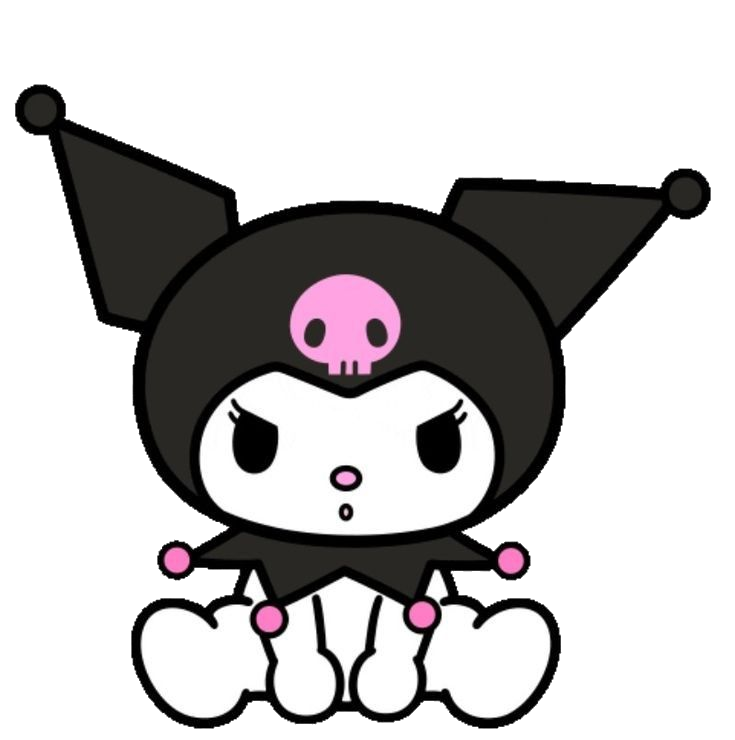
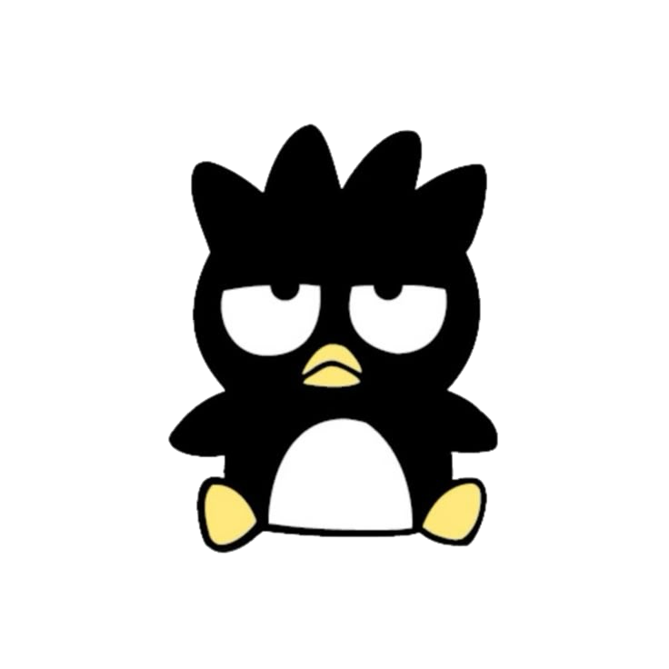
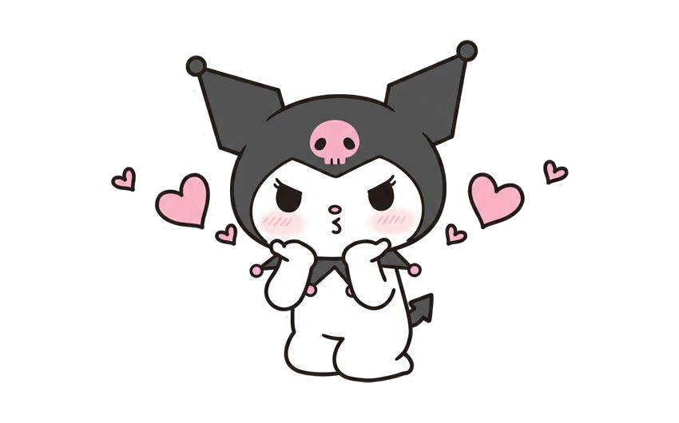
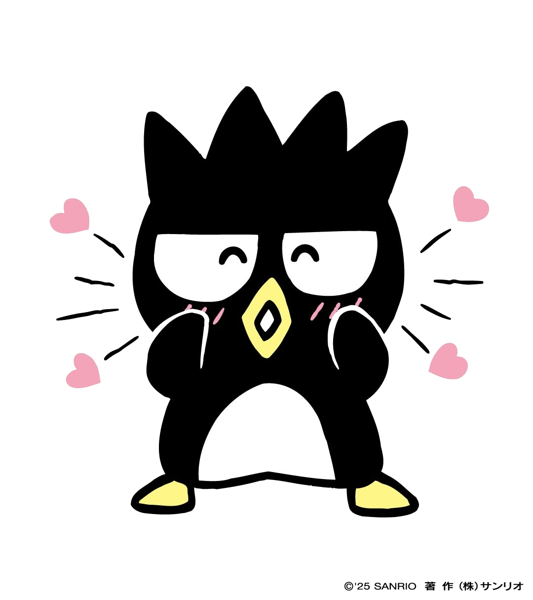
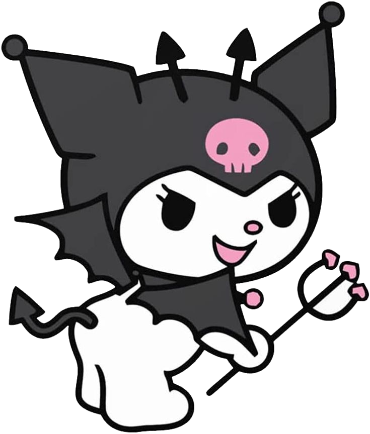
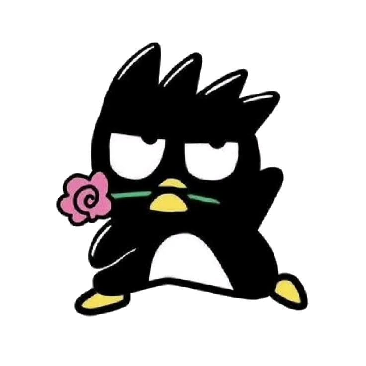
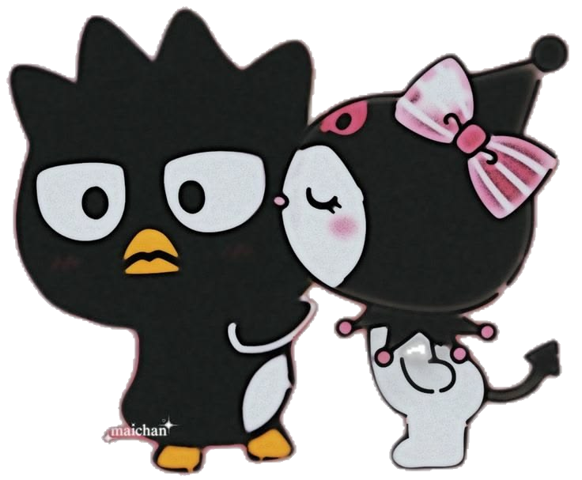

NOSOTROS
Quizás algunas cosas que vivimos parecen pequeñas cuando las miramos desde afuera. Pero para mí nunca fueron pequeñas. Porque fueron nuestras.
Todas esas noches hablando, sin darnos cuenta de la hora solamente porque ninguno quería irse.
Ese “te amo” que alguna vez fue solamente una frase y terminó significando muchísimo.
Un número que quizás para cualquiera no significa nada, pero para nosotros es muy especial.


SI PUDIERA VOLVER ATRÁS...
Si pudiera volver al momento en el que nuestras vidas todavía no se conocían... Si pudiera volver a ese instante en el que vos todavía eras una desconocida para mí... Y alguien me contara todo lo que iba a sentir por vos... probablemente no lo creería.
No sabría que iba a existir una persona capaz de quedarse tanto tiempo en mi cabeza. No sabría que iba a extrañar tanto una voz, una conversación, un mensaje. No sabría que iba a conocer a alguien que terminaría convirtiéndose en mi otra mitad, mi alma, mi persona...


LO QUE NUNCA SUPE DECIRTE ASÍ
Morena...
No sé exactamente en qué momento te convertiste
en alguien tan importante para mí.
Quizás fue de a poquito.
En cada conversación.
En cada madrugada.
En cada risa.
En cada “te amo”.
En cada vez que esperaba tu mensaje
y sonreía cuando aparecía tu nombre.
Lo único que sé es que un día dejaste de ser simplemente una persona con la que hablaba. Te convertiste en alguien que forma parte de mi vida. Te convertiste en mi persona.
Y aunque nuestra historia tuvo momentos hermosos y momentos que dolieron... nunca pude mirar todo lo que vivimos y pensar que no significó nada. Porque significaste muchísimo.
Hubo noches en las que me acosté y me quedé mirando el techo pensando en vos. Pensando qué estarías haciendo. Si estarías bien. Si me extrañarías aunque fuera un poquito. Y preguntándome cómo podía alguien ocupar tanto espacio en mi cabeza sin siquiera estar físicamente ahí.
Y creo que ahí entendí algo.
Que amar a alguien no significa que todo tenga que ser perfecto. También significa aprender. Entender. Escuchar. Respetar. Conocer los silencios. Y seguir viendo lo hermoso que existe en esa persona incluso cuando las cosas se vuelven difíciles.
Yo te amo, Morena.
Y no te amo porque seas perfecta.
Te amo porque sos vos.
Por tu forma de ser. Por tus ocurrencias. Por las cosas que te gustan. Por tus pequeños detalles. Por esa manera tan tuya de hacerte un lugar en mi vida sin siquiera darte cuenta.
Para mí sos única. No porque no exista nadie más en el mundo. Sino porque... nadie más podría ser vos.
Si tuviera que volver a elegir a la persona con la que quiero vivir todo eso otra vez... volvería a elegirte.
No borraría nada de lo nuestro. No borraría lo lindo. No borraría lo difícil. Porque todo eso nos hizo llegar hasta acá.
Y quizás lo que más deseo es que nos volvamos a encontrar. sin cambiar lo que fuimos, Que volvamos a ser exactamente eso que somos, sin borrar nada de lo nuestro. Simplemente volver a encontrarnos, volver a elegirnos, y seguir siendo nosotros. Más nosotros que nunca.
Quiero seguir conociéndote incluso después de creer que ya te conozco. Quiero volver a construir algo con vos. Sin apurarte. Sin obligarte. Simplemente porque todavía hay una parte de mí que cuando piensa en el futuro... inevitablemente te encuentro a vos.
Si alguna vez te preguntaste si dejé de elegirte... la respuesta es no.
Porque incluso después de todo...
seguís siendo vos.

Y AHORA SÍ...
Después de todo lo que fuimos.
Después de todo lo que vivimos.
Después de todo lo que sentimos.
Hay algo que todavía necesito preguntarte.
y todo esto me hace acordar aquella noche cuando te mande esa carta, estaba nervioso, ansioso todo
ahora mismo me siento igual que aquella vez.
Querés volver a ser mi novia?
No quiero que sientas que tenés que responder por presión amor
Solamente quería que supieras lo que siento
y preguntarte si todavía querés que escribamos
juntos lo que sigue.
cuando selecciones uno d esos, hacemelo saber amor porfis... q nervios.